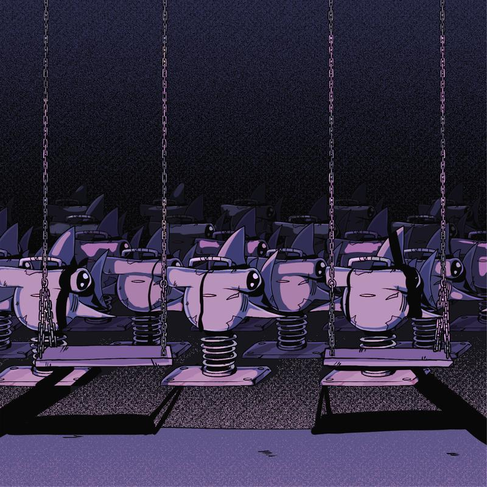

发布于 2021/07/04 共 1 首歌
ずっと真夜中でいいのに 新歌《Stay Foolish》于2021年7月4日（星期日）发行。
试听曲： ずっと真夜中でいいのに - ばかじゃないのに これは 二十歳じゃない 这并非二十岁的故事 作業着 剥ぎ取っても 就算剥下工作服 まだ お線香の匂い 床に寝そべってた 线香的气味仍旧萦绕身旁 我瘫倒在了地板上 一丁前に回り回る 扇風機に嘆いてたく 对着吹着我的电扇叹了一口气 ふと 会えない人を 思い浮かべてた 不经意间 回想起了那个再也见不到的人 急な矛盾が 飼い慣らせない 突来的矛盾难以被驯服 誰のせいって わけじゃない 这并非是谁的过错 色の濃い野菜ばっかり 湯掻いてた 烫着净是深色的蔬菜 鮮やかな仕草に 混ざりたいのに 明明想要混入一些高妙的手法 声があるのに いつもどうして 明明可以呼喊 却为何总是 言っとけばいいのに ばかじゃないのに 明明说出来就好的 又不笨 在り来りだろうけど 虽然是稀松平常的吧 僕には 君を思い返す日々で過ごしていける？ 但我难道要过着每天都会想起你的日子吗？ もう居ないのに 惹かれ合うのに 明明已经不在了 明明已经被你吸引 一瞬の夏だったよ 那一瞬的夏天啊 ありがとうぐわし 谢谢你 僕に残ってる 引き摺る温もり 留存我心的那份难以割舍的温暖 ずっと まだ目の前に 至今仍历历在目 それは わたしじゃない 那并非我的过错 傷つけない さよなら を 就算鞋里进了石子(就算被自己的意识所牵绊) 靴に石入っても 歩き考えてた -我仍旧边走边想如何不带伤害地道别 先ばかり気にする君と 遅れをとるわたしと 总是注视前方的你 和总是落于人后的我 ふと ぎこちない日々を 思い浮かべてた 不经意间 回想起了一同度过的生涩的日子 この先どうする ね どうしよう わからない 接下来要做什么 该怎么做 我不知道 君が溜息つく このやりとりに 你轻声叹息 这样的对话 安心できる 自分がいた 我便得以安心 急な矛盾が 飼い慣らせない 突来的矛盾难以被驯服 何がきっかけとかじゃないけど 虽然没有以什么为契机 疲れてくことも 慣れていたと思う 觉得已经习惯了疲倦 それが始まりで 義務になったし 以此为始 因为成为了义务 ゴールだったし ご飯できたよ 因为是目标 饭已经做好了哦 言っとけばいいのに ばかじゃないのに 明明说出来就好的 又不笨 在り来りだろうけど 虽然是稀松平常的吧 僕には 君を思い返す日々で過ごしていける？ 但我难道要过着每天都会想起你的日子吗？ もう居ないのに 惹かれ合うのに 明明已经不在了 明明已经被你吸引 一瞬の夏だったよ 那一瞬的夏天啊 これ以上求めた贅沢な 悲しみは 于此之上的 奢求 悲伤 何処へゆくの 又将去往何方呢 君の普段着 畳む途端に 正当叠起你的常服时 片付いた理屈の中で 吸って吐いて 在漂亮的借口之中 吸吐着 だって大丈夫だって 因为没事的 因为 終わりが近いと 仲良くなれたし 越是接近终焉 关系越会变得亲密 桃鉄勝って 君が寝落ちして 赢了桃铁(游戏名)的你 沉沉地睡去了 自分の好き＜君の好き 我的喜欢已远远不及你的喜欢(比起我的喜欢 你的喜欢) が何よりも大事で 比起一切都更加重要 同じ気持ちって 相同的情感 気づいちゃダメみたいな 好似注意到了便不行一般 さよなら ばっか だよ 净是道别啊 言っとけばいいのに ばかじゃないのに 明明说出来就好的 又不笨 在り来りだろうけど 虽然是稀松平常的吧 僕には 君を思い返す日々で過ごしていける 但我难道要过着每天都会想起你的日子吗？ もう居ないのに 惹かれ合うのに 明明已经不在了 明明已经被你吸引 一瞬の夏だったよ 那一瞬的夏天啊 ありがとう 谢谢你 僕に残ってる 引き摺る温もり 留存我心的那份难以割舍的温暖 ずっと まだ目の前に 至今仍历历在目